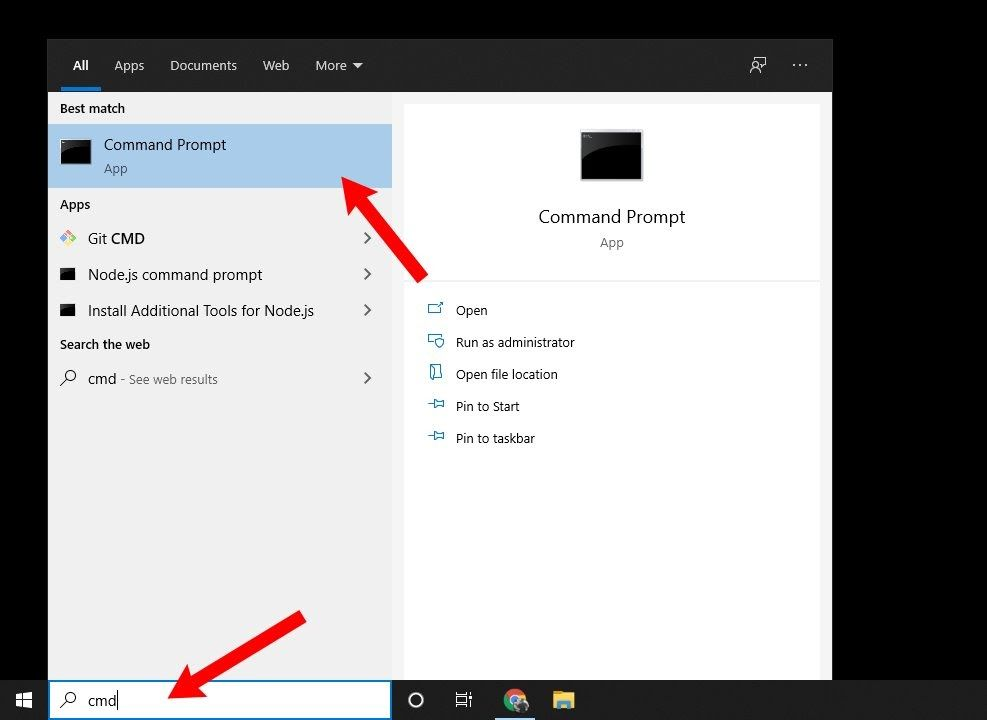
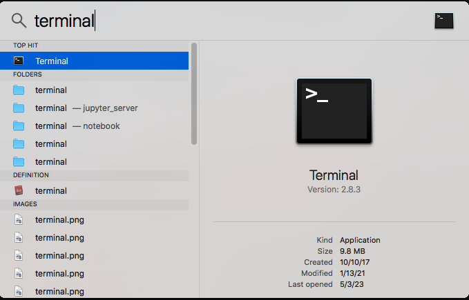
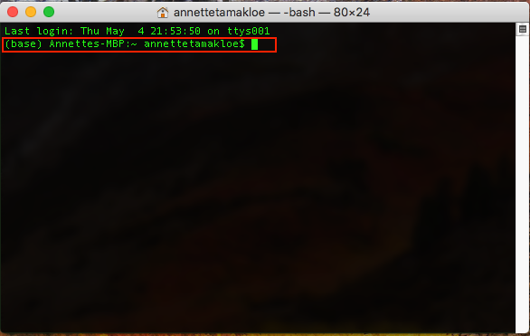
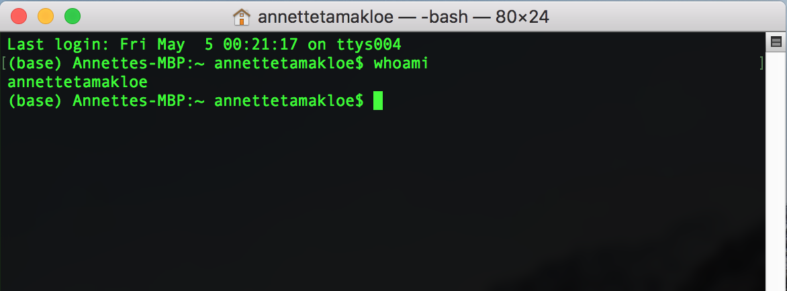
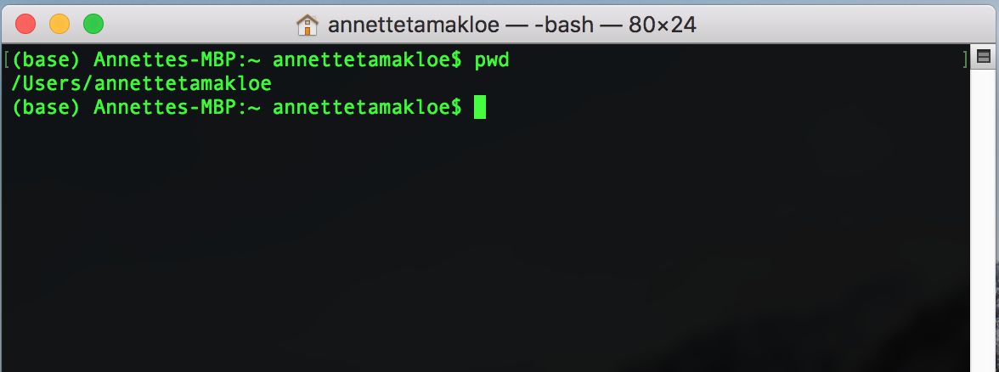
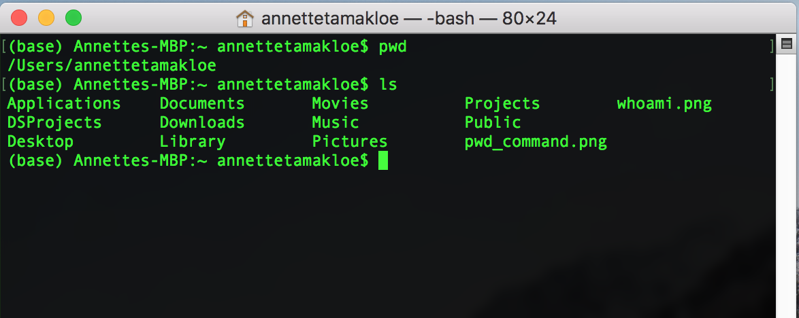
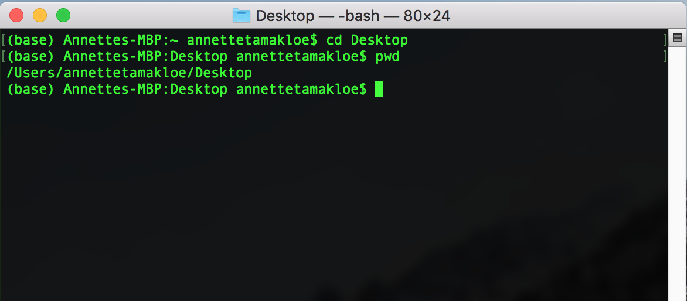
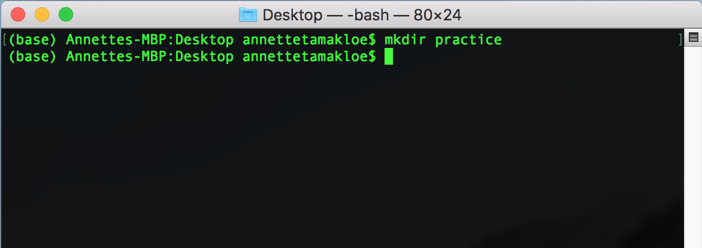
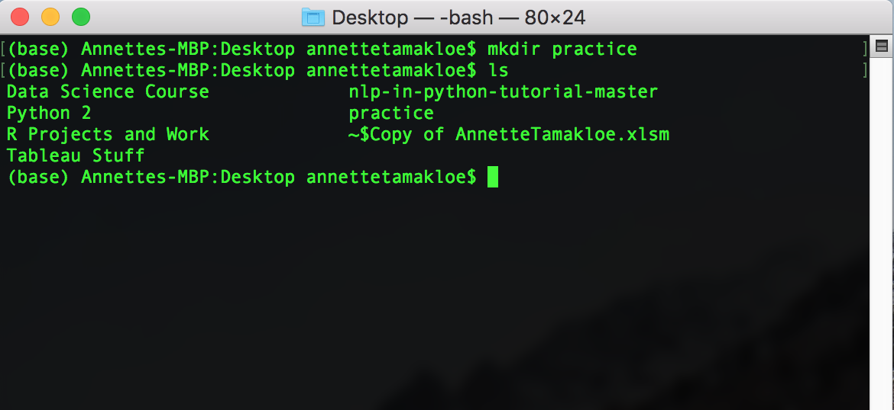
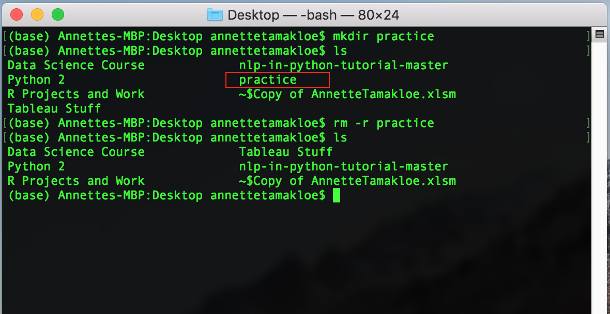

The Command Line#
Before you start your first project, it is important that you get familiar with the Command Line.
The command line (also known as the Terminal, or Command Prompt) refers to a type of program that comes pre-installed with Windows, Linux, and Mac computers and allows you to execute commands, run programs and navigate through the folders on your computer. I will often use the term terminal or command line because I use a Mac, but know that they refer to the same thing.
Learning the command line will be especially important for organizing your projects and you’ll find out later how important it is for version control. It may seem daunting but the command line is very easy to use.
Finding the Command Line#
1.1. On Windows#
On Windows, you can open the Command Prompt by clicking Start and then typing cmd into the search box. Click on it and the command prompt should appear.

1.2. On Mac#
To open the Command Prompt on a Mac, you can use Spotlight or Finder. To access Spotlight use the following instructions:
Hold the ⌘ (Command) + Space keys
Type in Terminal
Hit Enter
Another way to access the Command Line is by using the Finder App and typing in Terminal to find it

After opening the Command prompt you should see a white or black window that is now waiting for your commands. If you’re using a Mac or a Linux PC like me, you probably see a dollar sign right after your username. If you are on a Windows PC you probably see a greater than (>) sign before your username. Each command you make will be preceded by the $ or < sign.

Lets type in our first command by typing in the following command:
whoami

After hitting enter, you should see your username.
Paths#
1.1. Absolute Path#
All files can created, updated, or deleted using the command line interface. We do this by referencing paths; either relative or absolute.
An absolute path is the specific location of a file or folder as accessed from the root directory, typically shown as /. The root directory is the starting point from which all other folders are defined and is not usually the same as your home directory, which is normally found at /Users/[Your Username].
1.2. Relative Path#
A relative path is a reference to a file or folder relative to your current position or the present working directory (pwd). If we are in the folder /a/b/ and we want to open the file that has the absolute path /a/b/c/file.txt, we can simply type:
open c/file.txt
or
open ./c/file.txt
We can also use the absolute path at any time by adding a slash to the beginning of the relative path. The absolute path is the same for a file or a folder, regardless of the current working directory, but relative paths differ based on directory.
Command Line Basics#
1.1. Current Working Directory#
To find your current working directory:
For Windows: type
cdand click enter,For Mac: type
pwdand hit enter

1.2. List Files and Directories#
To see what is in a current directory:
For Windows: type
lsand click enterFor Mac: type
dirand click enter

1.3. Change current directory#
To change a current directory use cd and type in the new location you want to go to. In this case, we will try to go to the Desktop directory. Lets ensure that our working directory has changed by using our cd or pwd function
For Windows and Mac:
cdDesktoppwd

1.4. Creating a new directory/folder#
Lets create a new folder called practice in the Desktop directory. To create a new directory, we will use the mkdir function and hit enter
For both Windows and Mac:
mkdirpractice

Now lets confirm that it indeed exists by using the ls command to look in our Desktop folder
For both Windows and Mac:
ls

1.5. Deleting Files and Directories#
Now this is something you want to be extremely careful with since it cannot be undone. Ensure you are in the correct directory with the file or folder you would like to delete and be sure to double check so you don’t lose important work
To delete a file use the rm or rmdir command:
For Windows:
rmdirFor Mac:
rm -r
Lets delete the practice file we created and check after to see if it has actually been deleted

1.6. Creating Files (text files)#
For Mac :
touch [enterfilename.txt]For Windows :
echo [enterfilename.txt]
1.7. Cleaning up your Command Prompt#
For a complete clean slate in your command prompt, use the clear function
For both Windows and Mac:
clear
1.8. Exiting the Command Line#
To safely close the Command Line:
For both Windows and Mac:
exit
Extra Learning Resources#
Now these are just a few examples of what you can do in the command line, but these are the basic commands I find myself using over and over again to maintain my directories.
These commands can be easy to forget when starting out, so for a quick refresher and to play with more commands, you can download this Command Line Cheat Sheet or use this Command Line Reference guide.